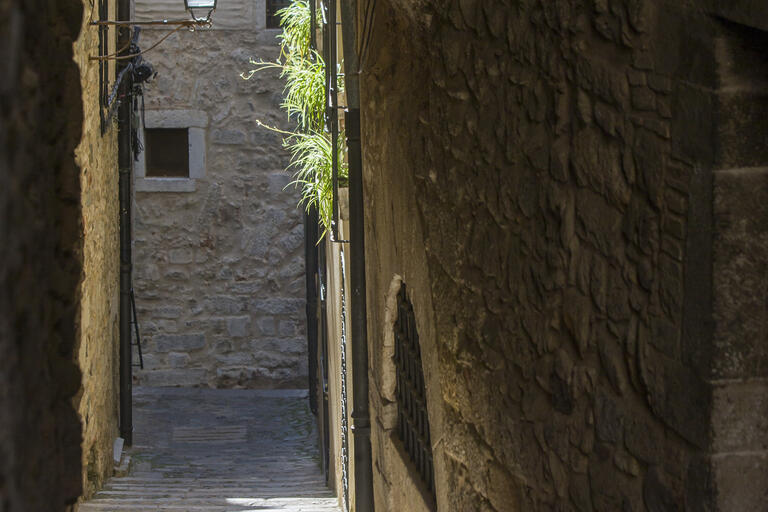

Visita · Girona
D ocumentat des del 1160, el barri jueu es troba entre els més ben conservats d’Europa. Entre els segles XIII i XIV, als seus carrers s’hi van aixecar sinagogues, banys rituals, escoles i…